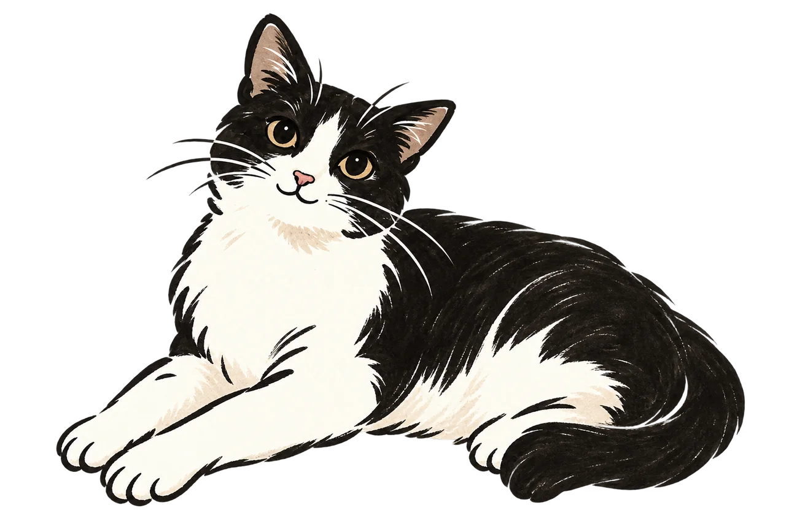

高雄寵物保母費用怎麼算？價格組成與挑選指南

「到府餵貓一次多少錢？」是最常被問到的問題，但每家的條件不同，很難用一個數字回答。與其只看單價，不如先弄懂價格是由哪些項目組成，再用同樣的條件比較。這篇用我們的收費方式舉例說明。
價格通常由哪些項目組成？
| 項目 | 會影響價格的原因 |
|---|---|
| 基本費用 | 每趟服務的時間與內容 |
| 距離 | 離服務人員越遠，交通成本越高 |
| 貓咪數量 | 隻數多，需要的時間也更長 |
| 時段 | 清晨或夜間的服務，常會加價 |
| 假日 | 國定假日、春節或颱風天仍服務時，通常另計 |
| 加購項目 | 用藥協助、延長時間、家務代辦等 |
| 鑰匙 | 另約時間地點取還鑰匙時，可能收取車馬費 |
比較價格時，先把條件對齊
- 時間：一趟是二十分鐘還是四十分鐘？以我們為例，每趟 NT$600、40 分鐘起，換算約每 30 分鐘 NT$450。
- 內容：有沒有包含陪玩、健康觀察與拍照錄影回報，還是只負責餵食和清貓砂？
- 距離：報價的距離範圍是多少？超過會怎麼算？
- 貓咪數量：幾隻以內不加價？
- 日期：有沒有遇到假日或春節？
帳單裡容易被忽略的另計項目
- 距離加價，以及多貓加價與延長服務時間。
- 國定假日、春節、颱風天仍服務的加價。
- 清晨或夜間時段的加價。
- 用藥協助、順手家務、延長服務等加購。
- 鑰匙另約取還的車馬費。
- 代購物品、緊急就醫陪同，這類無法事先預估的項目，通常在服務後依實際發生結算。
建議預約前就請對方列出這些項目，並確認取消與改期的規則。
試算範例（以餵你好的收費方式為例）
以下範例不含優惠與另計項目，實際金額以免費家訪後的報價為準。
| 情境 | 計算 | 金額 |
|---|---|---|
| 出國 5 天，每天 1 趟，後驛站 2 公里，1 隻貓 | $600 × 5 趟 | NT$3,000 |
| 出差 3 天，每天 1 趟，4 公里，需要口服藥或外用藥協助 | ($600 + 距離 $100 + 用藥 $100) × 3 趟 | NT$2,400 |
| 春節 3 天，每天 1 趟，2 隻貓，3 公里內 | ($600 + 春節 $400) × 3 趟 | NT$3,000 |
連續多趟、回購與同日兩趟另有優惠。完整的加價與優惠，請看官網的 收費方式。
怎麼用預算挑選？
- 不要只看單價。把時間、內容、回報與合約一起比較，才知道價格是否合理。
- 重視透明度。加價項目寫得清楚、簽約前會逐項確認的業者，事後的爭議通常也比較少。
- 留意貓咪與天數。多隻貓、天數多、遇到假日，費用差距會被放大，先算過再決定。
想知道您家的實際費用？
告訴我們住址區域、貓咪數量、日期與需求，我們會在 LINE 上免費協助估價，不必自己一項項計算。